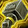
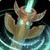
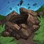

恢复萨 PvP 判断训练器
这版本唯一要记住的一句
恢复萨最贵的治疗不是把血抬回来，
是用图腾和打断让那一下根本没发生。
是用图腾和打断让那一下根本没发生。
为什么

治疗只是第二层答案第一层是阻断▸Icy Veins 对恢复萨职责的原话：除保持队伍存活外，要用工具干扰并阻止即将落地的法术或伤害。
你的牌在地上图腾先受位置约束▸
法力通常不是第一死因位置和时机先崩▸
公开攻略明确写着恢复萨很少因为没法力输掉比赛。真正的危险是被贴住后读不出治疗、被眩晕前没开减伤、把两张反法术牌交在同一发上。
该不该交大牌
三个时钟

图腾时钟位置决定牌有没有效果▸链接、治疗之潮、战栗都依赖队友站位。图腾落下前先确认覆盖；落下后看它有没有被打掉。
本版定盘
英雄天赋：图腾师 Totemic36/50，先知 Farseer 14/50▸
top50 中图腾师占 72%。它围绕 Surging Totem 与各类治疗图腾运作，把恢复萨「牌在地上」的特征进一步放大。另一条并非没人用，不写成唯一解。

PvP 天赋：只有根基接近定盘其余两格有真实分歧▸